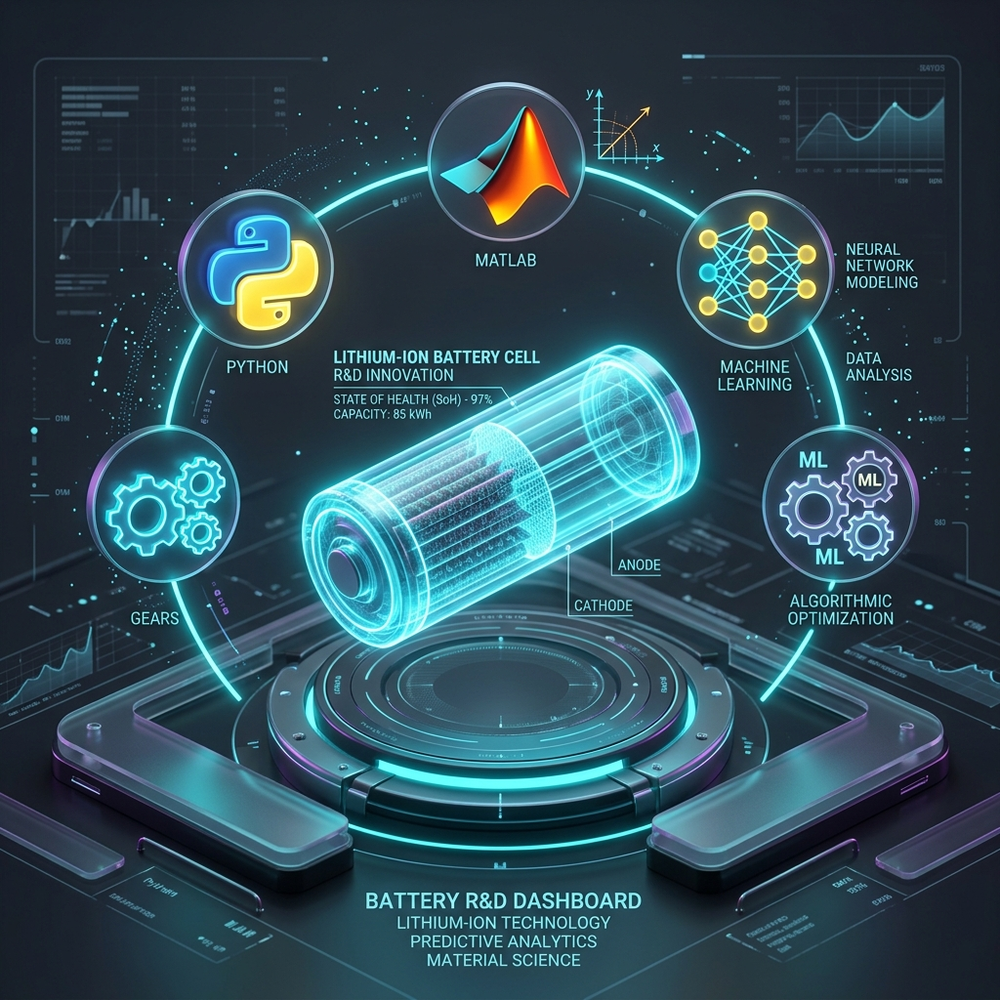

Hi, I am Shaik Nafeesa
Bridging Advanced AI / LLMs &
I build RAG systems, deploy agentic reasoning workflows, and design robust telematics anomaly detection models inside automotive ECUs. A hardware-focused developer pushing the boundaries of machine intelligence.
About Me
I am a Software Engineer (R&D) specializing in automotive intelligence. With an academic background in Electrical and Electronics Engineering from BVRIT Hyderabad, my passion is at the intersection of embedded code execution and machine intelligence workflows.
At TVS Motor Company, I lead efforts in building RAG architectures using LangChain and LangGraph to automate complex vehicle diagnostic sequences (ISO 14229 / UDS). Simultaneously, I design deep learning anomaly detectors (using PyTorch and LSTMs) to identify CAN bus starvation and congestion in real-time, bringing advanced diagnostic safety into connected vehicles.
I write clean, MISRA C compliant embedded code, work with raw hex protocols and Vector CANalyzer, and build highly vector-indexed search pipelines. I am always exploring how edge intelligence can make mechanical platforms safer and smarter.
R&D
Software Engineer
4+
Published Works
EEE
B.Tech Graduate
90%+
Model Accuracy
Core Expertise
AI & Large Language Models
Implementing intelligent agents, orchestration graphs, and high-performance search pipelines.
- Retrieval-Augmented Gen (RAG)
- LangChain & LangGraph
- LangSmith Agent Monitoring
- PyTorch Deep Learning
- Vector Stores (FAISS, Pinecone)
- NLP & LLM Fine-Tuning
- Model Optimization
Embedded & Telematics R&D
Writing high-compliance low-level code, analyzing automotive bus systems, and building IoT bridges.
- Embedded C (MISRA C)
- STM32, ESP32, Arduino
- CAN bus & UDS (ISO 14229)
- Vector CANalyzer
- MQTT & DBus
- Real-Time Telemetry
- SOA & ECU Inter-comms
Engineering & Operations
Maintaining full lifecycle version control, pipeline deployments, and robust algorithmic scripting.
- Python, C, C++
- Git Version Control
- Linux & Shell Scripting
- Docker Containerization
- MLflow & DVC
- AWS SageMaker
- Apache Airflow
Work Experience
Software Engineer (R&D)
TVS Motor Company
RAG-based UDS Service Tool Automation
- Engineered an advanced RAG system utilizing LangChain and LangGraph to fully automate UDS (ISO 14229) ECU command generation, slashing manual expert lookup time by 50%.
- Built ETL data extraction pipelines to parse and vectorize complex, unstructured diagnostic formats from CAN logs, DBC databases, and CDD files, storing them securely in high-performance FAISS index vectors.
- Deployed LangSmith reasoning agents that translate natural language diagnostic queries into exact target Service Identifiers (SIDs) and Data Identifiers (DIDs).
- Designed specialized Service-Oriented Architecture (SOA) helper modules to translate and format raw hex payload sequences for direct client-to-ECU messaging.
- Validated diagnostic standard compliance on live CAN networks using Vector CANalyzer, achieving 100% diagnostic generation accuracy.
Intelligent Telematics & CAN Anomaly Detector
- Developed a PyTorch LSTM neural pipeline designed to run at millisecond-scale on cloud-connected telemetry, recognizing CAN bus signal starvation and congestion attacks.
- Conducted detailed Feature Engineering on high-frequency CAN frames to construct statistical timing baselines and priority weight parameters.
- Used Vector CANalyzer to run hardware-in-the-loop validation of anomalous detection pipelines against pre-designed signal hijack models.
- Deployed low-overhead MQTT clients (written in C++) to stream telemetry data from TCUs directly to target cloud telemetry brokers.
- Enforced strict MISRA C compliance standards in ECU interface libraries, enhancing software reliability metrics by 90%.
Bachelor of Technology (B.Tech)
BVRIT Hyderabad College of Engineering for Women
Specialized in Electrical and Electronics Engineering. Active research at the intersection of electrical control loops, battery health modeling, and IoT monitoring grids.
Intermediate Education (MPC)
Sri Nalanda Junior College
Specialized in Mathematics, Physics, and Chemistry (MPC).
Class 10 Board
Sri Chaitanya School
Academic & Research Projects

Battery Cycle Life Prediction using ML
Extracted early-cycle chemical and thermal features from batteries to train predictors reaching 90% lifespan accuracy.
IIIT Hyderabad — Plug Load Monitoring
Engineered an IoT-based monitoring system for real-time electrical grid tracking, utilizing OM2M standard and ThingSpeak APIs.
College Credentials & Proof of Work
Exhaustive verified record of leadership, innovation projects, co-curricular workshops, and internships compiled during my B.Tech studies.
Publications & Achievements
Get in Touch
Let's talk tech!
Interested in collaborating on AI agent architectures, embedded telemetry pipelines, or safety-critical hardware? Reach out directly via email, phone, or LinkedIn!